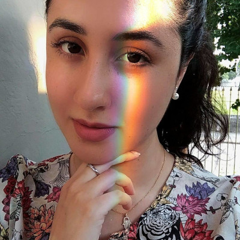

Essa é uma homenagem com tudo que aprendi até o momento.
Parabéns a todas as mulheres da minha vida!
Mulher, símbolo de força, amor e determinação! Merecedora de todo carinho, respeito e dedicação!
Parabéns para a
Mulher da minha vida, forte,
companheira e carinhosa, que sempre esteve ao meu lado, e que me mostrou o verdadeiro amor!
E a cada novo sorriso teu, serei feliz por amar você!
Parabéns para a mulher que me ensinou todos os valores, o que é certo e errado, me educou e me deu exemplos, com seu coração enorme, doce e justo!
Parabéns para a mulher que foi a minha primeira amiga, que me acompanhava em todas as aventuras, me divertia. E que hoje se transformou em uma mulher incrível, que me orgulha por ser seu irmão!

Parabéns a essas duas mulheres que entraram em minha vida, fortes,que não se abatem e mostram para todos o que é um amor em família. Agradeço todo o carinho que tem por mim!
"Ser Mulher é ser mais forte do que os olhos podem ver. É ter no coração, o lugar para todos os sonhos do mundo!